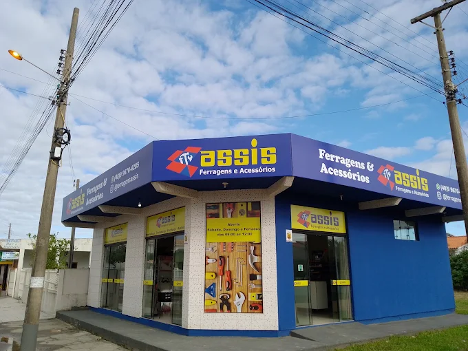

Ferragens & Fixadores
Parafusos, dobradiças, fechaduras, brocas e acessórios.
Consultar produtos →Ferragens, ferramentas, fixadores e acessórios para construção, reforma e manutenção. Atendimento direto em Balneário Rincão.

Produtos para construção, reforma e manutenção. Consulte a disponibilidade pelo WhatsApp antes de ir à loja.
Parafusos, dobradiças, fechaduras, brocas e acessórios.
Consultar produtos →Itens para quem trabalha, reforma, monta e conserta.
Consultar produtos →Acessórios e soluções práticas para diferentes tarefas.
Consultar produtos →Produtos de proteção e itens para uso profissional.
Consultar produtos →Envie uma foto, o nome ou descreva o que você precisa. A equipe da Assis pode consultar a disponibilidade para você.
Perguntar no WhatsApp ↗Na Zona Nova, em Balneário Rincão, a Assis Ferragens e Acessórios reúne produtos para construção, manutenção, ferramentas e utilidades.
Antes de sair de casa, você pode chamar pelo WhatsApp e consultar um produto ou pedir uma orientação sobre o que procura.
Ver onde estamos →R. Hercílio Luz, 400
Zona Nova — Balneário Rincão, SC
CEP 88820-000